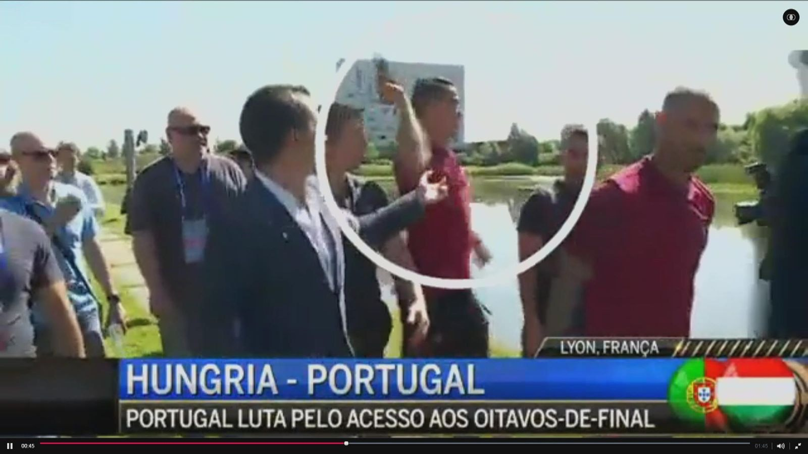

Snatched Reporter's Mic, Threw It in the Lake
The scene: On 22 June 2016, the eve of Portugal's final Euro group match against Hungary, Ronaldo was walking by the lake at Portugal's Lyon base to relax. CMTV reporter César Bankowski came up to ask about preparations; without a word Ronaldo snatched the microphone from his hand, turned and hurled it into the lake, leaving the reporter dumbfounded.
Root of the grudge: It was not unprovoked. CMTV, part of the Cofina media group, had for years run negative coverage of Ronaldo's private life — from nightclub gossip to tax rumours. Ronaldo had long since imposed an internal 'no CMTV interviews' rule; the mic grab was read as the concentrated eruption of his long-simmering grievance against the outlet.
Tournament pressure: Ronaldo's Euros had opened poorly — he missed a penalty against Austria, the team drew twice and was on the brink of elimination, and the Portuguese press piled on. Analysts suggested on-field frustration, compounded by the media hounding, left Ronaldo at his breaking point, and the lakeside microphone became the punching bag.
The reporter's response: Bankowski was remarkably composed afterwards, saying he understood Ronaldo's anger and that 'this is the result of CMTV's long coverage of him'. He even half-joked that the microphone had 'died in the line of duty'. That response in a way confirmed the long-standing bad blood, and added another layer of drama.
Polarised public: The clip went viral and opinion split hard. Fans hailed Ronaldo's 'authenticity' and argued the media had it coming; critics pointed out that destroying someone else's property and humiliating a reporter was itself unbecoming, badly mismatching his status as a 'professional footballer'. BBC, The Guardian and other mainstream outlets questioned his professionalism.
Ironic reversal: Most ironically, Ronaldo then scored twice against Hungary, including a stunning backheel, led Portugal to a 3-3 escape, and went on to lift the trophy. The criticism was drowned by victory — 'mic-toss-gate' instead became a footnote of the legend. Outcome-oriented narrative logic like this was criticised as indulging bad behaviour.